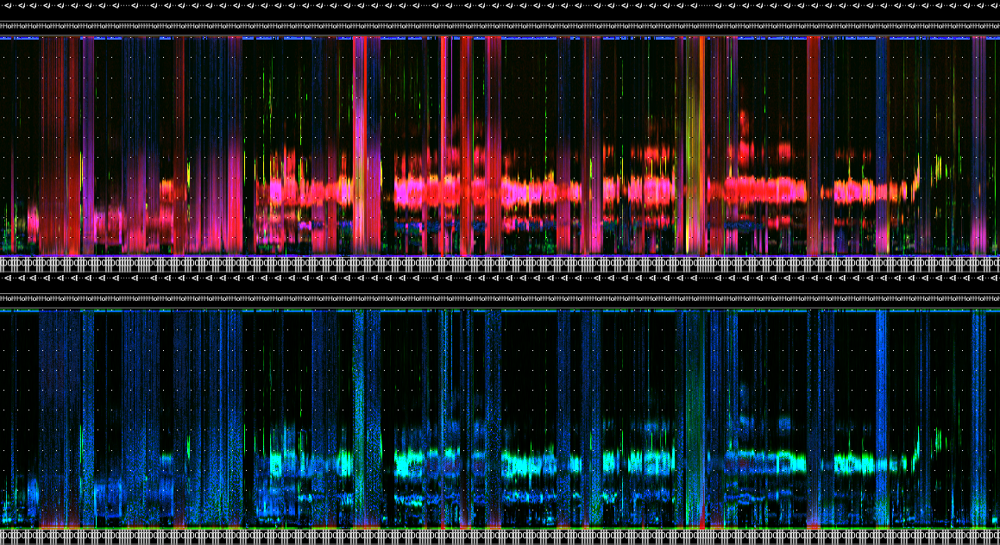

Acoustic pre-processing
acoustic-pre-processing.RmdThe following set of functions help to pre-process and organize audio and corresponding metadata. In conjunction, these tools allow you to select recordings parameterized to a specific study design.
-
wt_audio_scanner()scans a directory of audio files and prepares them in a tibble with WildTrax formatted columns -
wt_run_ap()allows you to generate acoustic indices and false-colour spectrograms from awt_audio_scanner()tibble, whilewt_glean_ap()wrangles the output into summary plots and long-duration false-colour spectrograms -
wt_signal_level()detects signals in audio based on amplitude thresholds -
wt_chop()divides a large audio file into shorter segments -
wt_make_aru_tasks(),wt_songscope_tags()andwt_kaleidoscope_tags()allow you to link media to tasks and to generate tags from recognizer or classifier results from Songscope and Kaleidoscope
Scanning audio files from a directory
The wt_audio_scanner() function reads in audio files
(either wac, wav or flac format) from a local directory and outputs
useful metadata.
# Plan futures
future::plan(multisession)
# Scan data
if (dir.exists(".")) {
wt_audio_scanner(path = ".", file_type = "wav", extra_cols = T)
} else {
'Can\'\t find this directory'
}You might want to select recordings between certain times of day or year, or filter recordings based on some criteria.
files %>%
dplyr::select(-file_path)
#> # A tibble: 1,041 × 10
#> size_Mb unsafe file_name location recording_date_time file_type julian year
#> <dbl> <chr> <chr> <chr> <dttm> <chr> <dbl> <dbl>
#> 1 3.51 Safe 228-NE_20… 228-NE 2021-11-21 12:35:49 wav 325 2021
#> 2 106. Safe 228-NE_20… 228-NE 2022-03-01 00:00:00 wav 60 2022
#> 3 31.8 Safe 228-NE_20… 228-NE 2022-03-01 02:00:00 wav 60 2022
#> 4 106. Safe 228-NE_20… 228-NE 2022-03-01 08:59:00 wav 60 2022
#> 5 31.8 Safe 228-NE_20… 228-NE 2022-03-01 10:29:00 wav 60 2022
#> 6 31.8 Safe 228-NE_20… 228-NE 2022-03-01 12:00:00 wav 60 2022
#> 7 31.8 Safe 228-NE_20… 228-NE 2022-03-01 15:00:00 wav 60 2022
#> 8 31.8 Safe 228-NE_20… 228-NE 2022-03-01 18:17:00 wav 60 2022
#> 9 31.8 Safe 228-NE_20… 228-NE 2022-03-01 20:17:00 wav 60 2022
#> 10 106. Safe 228-NE_20… 228-NE 2022-03-02 00:00:00 wav 61 2022
#> # ℹ 1,031 more rows
#> # ℹ 2 more variables: gps_enabled <lgl>, time_index <int>
files %>%
dplyr::mutate(hour = lubridate::hour(recording_date_time)) %>%
dplyr::filter(julian == 176,
hour %in% c(4:8))
#> # A tibble: 2 × 12
#> file_path size_Mb unsafe file_name location recording_date_time file_type
#> <chr> <dbl> <chr> <chr> <chr> <dttm> <chr>
#> 1 /volumes/buda… 106. Safe 228-NE_2… 228-NE 2022-06-25 05:35:00 wav
#> 2 /volumes/buda… 31.8 Safe 228-NE_2… 228-NE 2022-06-25 07:05:00 wav
#> # ℹ 5 more variables: julian <dbl>, year <dbl>, gps_enabled <lgl>,
#> # time_index <int>, hour <int>Running the QUT Ecoacoustics AnalysisPrograms software on a wt_* standard data set
The wt_run_ap() function allows you to run the QUT
Analysis Programs (AP.exe) on your audio
data. AP generates acoustic index values and false-colour spectrograms
for each audio minute of data. Note that you must have the AP program
installed on your computer. See more here (Towsey
et al., 2018).
# Use the wt_* tibble to execute the AP on the files
wt_run_ap(x = my_files, output_dir = paste0(root, 'ap_outputs'), path_to_ap = '/where/you/store/AP')Then use wt_glean_ap() to plot the acoustic index and
long-duration false-colour spectrogram (LDFC) results.
> # This example is from ABMI's Ecosystem Health Monitoring program
>
> my_files <- wt_audio_scanner(".../ABMI-986-SE", file_type = "wav", extra_cols = )
>
> wt_glean_ap(my_files %>%
+ mutate(hour = lubridate::hour(recording_date_time)) %>%
+ filter(between(julian,110,220),
+ hour %in% c(0:3,22:23)), input_dir = ".../ap_outputs", purpose = "biotic")
> 
Applying a limited amplitude filter
We can use the wt_signal_level() function to search for
sounds that exceed a certain amplitude threshold.
if (dir.exists(".")) {
signal_file <- wt_audio_scanner(path = ".", file_type = "wav", extra_cols = T)
} else {
'Can\'\t find this directory'
}
wt_signal_level(path = signal_file$file_path,
fmin = 0,
fmax = 10000,
threshold = 5,
channel = 'left')
# Run
s
# Return a list object, with parameters stored
str(s)
# We can view the output:
s['output']
# We have eleven detections that exceeded this threshold.Linking data to WildTrax
Make tasks at any time using a wt_* standard data set
with wt_make_aru_tasks().
wt_make_aru_tasks(input = files %>% select(-file_path), task_method = "1SPT", task_length = 180)The function wt_songscope_tags() reformats the output
obtained from a Wildlife Acoustics Songscope recognizer. This
transformation involves converting the recognizer tags into tags that do
not have a method type. This makes it possible to upload each hit as a
tag in a task. Similarly, the function
wt_kaleidoscope_tags() performs the same reformatting
process, but with Kaleidoscope instead. It is worth noting that this
function targeted for sonic and ultrasonic species upload.
# Convert Songscope output into WildTrax tags
wt_songscope_tags(
input,
output = c("env", "csv"),
my_output_file = NULL,
species_code,
vocalization_type,
score_filter,
method = c("USPM", "1SPT"),
task_length
)
# Convert Kaleidoscope output into WildTrax tags
wt_kaleidoscope_tags(
input,
output,
tz,
freq_bump = T) # Add a frequency buffer to the tag, e.g. 20000 kHz
songscope_tagsIf you’ve already uploaded recordings to WildTrax, scan your media
using wt_audio_scanner() and a relative folder path.
my_files <- wt_audio_scanner(path = '/my/BigGrid/files', file_type = 'all', extra_cols = F)And then download the project data you wish to compare it to:
my_projects <- wt_get_download_summary(sensor_id = 'ARU') %>%
tibble::as_tibble() %>%
filter(grepl('Big Grids',project)) %>% # Customized as needed
mutate(data = purrr::map(.x = project_id, .f = ~wt_download_report(project_id = .x, sensor_id = 'ARU', weather_cols = F, reports = 'main')))Alternatively, go to WildTrax to Organization > Recordings >
Manage > Download Recordings to get a list of all recordings. Then
either filter out or do an anti-join on location and
recording_date_time. That should give you the remaining
list of media that has not been processed or uploaded to WildTrax
yet.